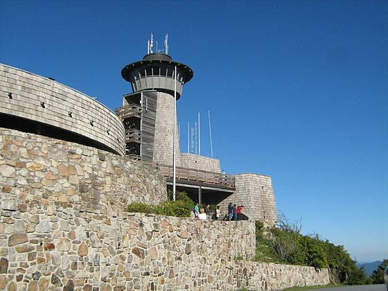

Brasstown Bald is the highest point in the U.S. state of Georgia. Located in northeast Georgia, the mountain is known to the native Cherokee people as Enotah.The name in English is derived from a mistaken translation of the term for the nearby Cherokee village of Brasstown, located along the upper Brasstown Creek (named in English from the same error) feeding the Hiawassee River.[3]
The adventure begins at a trailhead near the visitor’s center at the base of the mountain (view maps and driving directions). The climb to the top starts immediately, as the trail begins its steady ascent. The path is paved, generously wide, and serpentine throughout its length, switching back in wide meanders as it climbs.
The surrounding forest is rocky, rugged, and vibrantly lush. Leathery-leafed rhododendron frame the sides of the trail alongside gnarly-branched mountain laurel. Both bloom abundantly in late springtime, so this adventure offers a colorful climb when the weather warms in these high elevations. Short, scraggly trees and leafy underbrush shade the forest floor, providing the perfect habitat for carpets of moss to grow.
Information provided for fair use by wikipedia.com and atlantatrails.com